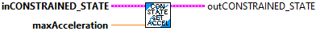
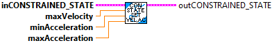

ConstrainedState
ConstrainedState_New
Internal routine used only by TrajectoryParam_timeParam.
ConstrainedState_SetMaxAccel

Internal routine used only by TrajectoryParam_timeParam.
ConstrainedState_SetMinAccel
Internal routine used only by TrajectoryParam_timeParam.
ConstrainedState_SetVelAccel

ConstrainedState_SetVelocity
Internal routine used only by TrajectoryParam_timeParam.